Videolar
Olimpiada mavzulari bo‘yicha tanlangan darslar. Video YouTube’da ochiladi.
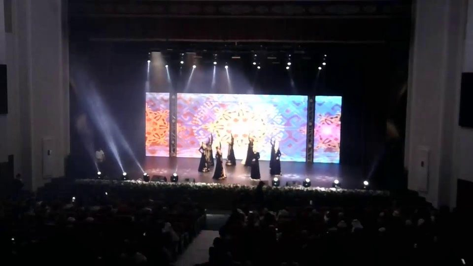
ARBIChO 2026: taqdirlash marosimi
Nukusda o‘tgan 3-Abu Rayhon Beruniy nomidagi xalqaro kimyo olimpiadasining yopilish marosimi. Yozuv Fan olimpiadalari markazi kanalida.
YouTube’da ko‘rishTanlangan darslar
Kanaldagi mavzularga mos, ishonchli manbalardan olingan 11 ta dars.
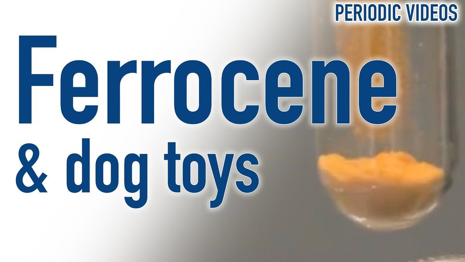
Metallorganik kimyoFerrotsen
Periodic Videos jamoasining ferrotsen haqidagi videosi. Konsepsiyalardagi ferrotsen mavzusiga qo‘shimcha.
Periodic Videos · ingliz tilida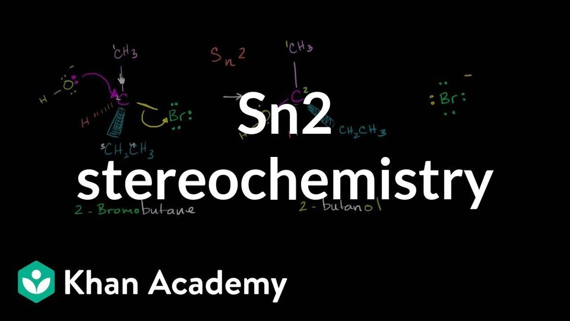
Organik kimyoSN2 stereokimyosi
SN2 reaksiyasining stereokimyosi haqida dars.
Khan Academy · ingliz tilida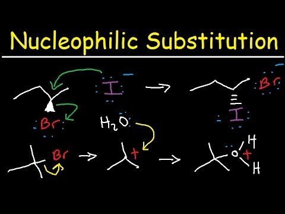
Organik kimyoSN1 va SN2 mexanizmlari
Nukleofil almashinish reaksiyalari: SN1 va SN2 mexanizmlari bitta darsda.
The Organic Chemistry Tutor · ingliz tilida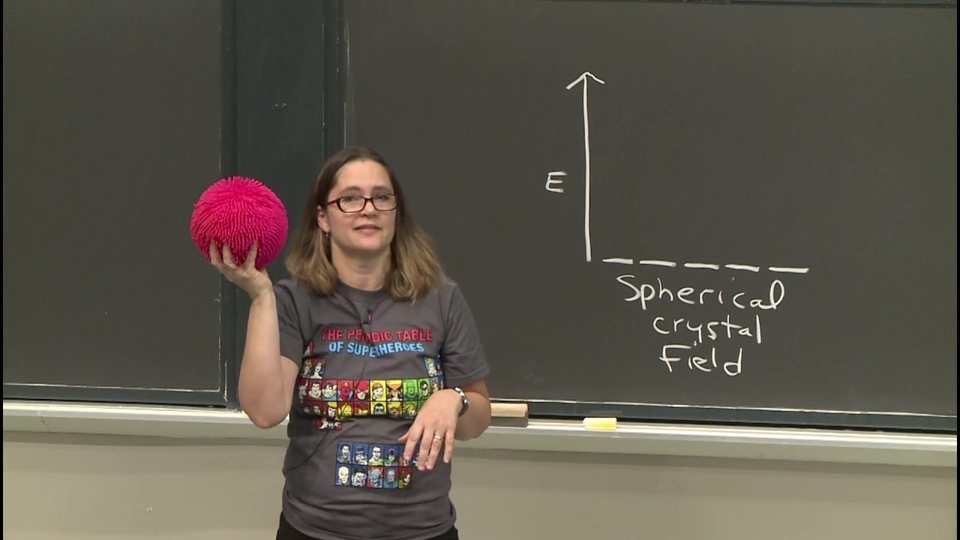
Koordinatsion kimyoKristall maydon nazariyasi, 1-qism
MIT 5.111 kursining 28-ma’ruzasi: o‘tish metallari va kristall maydon nazariyasi.
MIT OpenCourseWare · ingliz tilida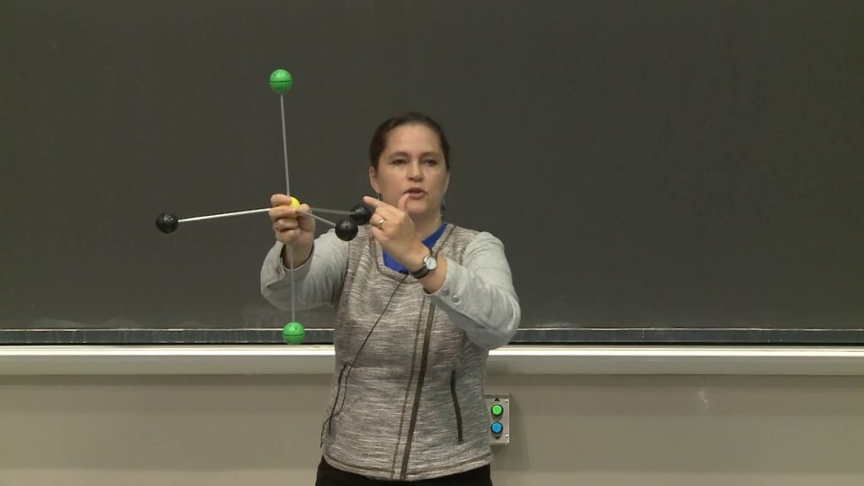
Umumiy kimyoMolekula shakli: VSEPR
MIT 5.111 kursining 12-ma’ruzasi: VSEPR nazariyasi va molekulalar shakli.
MIT OpenCourseWare · ingliz tilida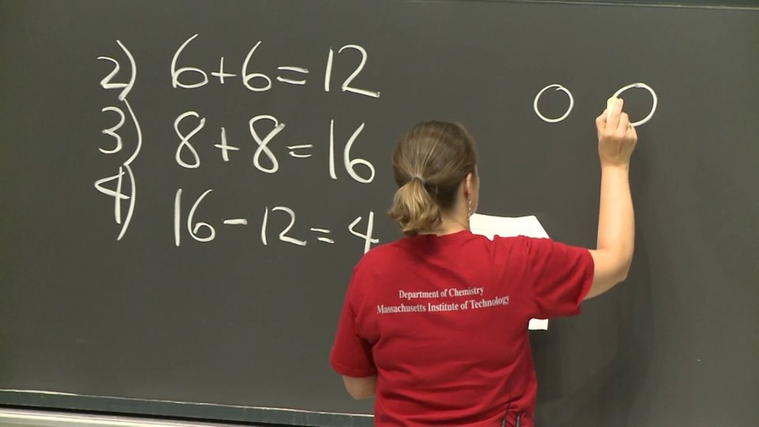
Umumiy kimyoFormal zaryad va rezonans
MIT 5.111 kursining 11-ma’ruzasi: formal zaryad va rezonans.
MIT OpenCourseWare · ingliz tilida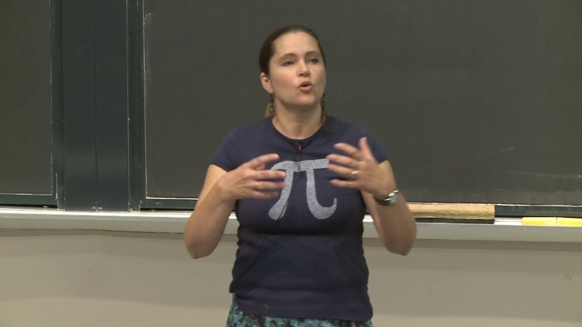
Umumiy kimyoMolekulyar orbitallar nazariyasi
MIT 5.111 kursining 13-ma’ruzasi: molekulyar orbitallar nazariyasi.
MIT OpenCourseWare · ingliz tilida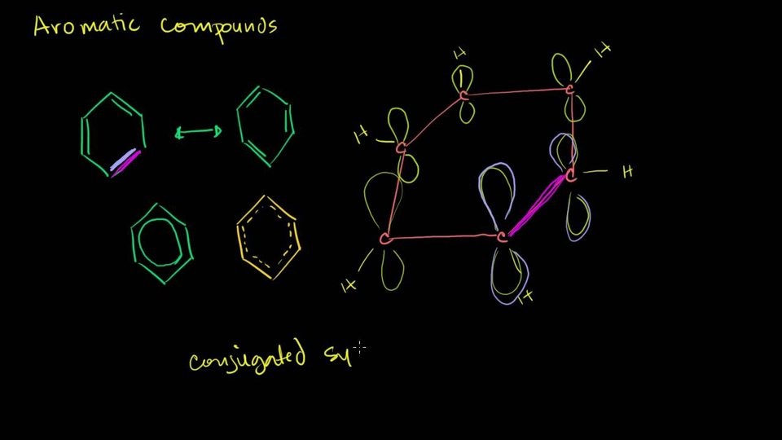
Organik kimyoAromatik birikmalar va Hückel qoidasi
Aromatik birikmalar va Hückel qoidasi haqida dars. Konsepsiyalardagi siklopentadien mavzusiga qo‘shimcha.
Khan Academy · ingliz tilida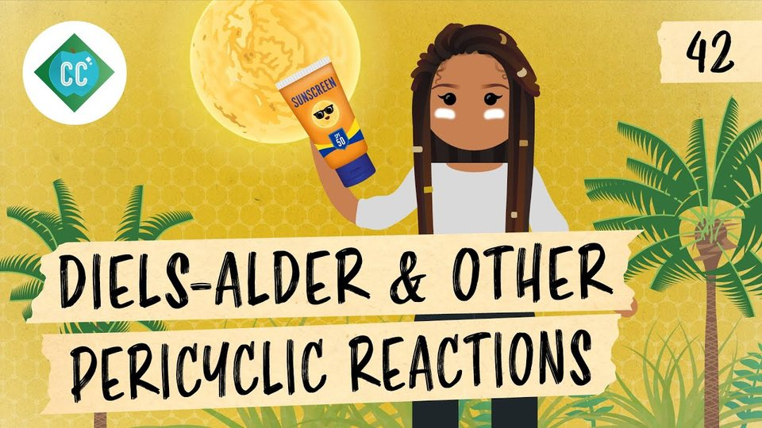
Organik kimyoDiels–Alder va boshqa peritsiklik reaksiyalar
Crash Course Organic Chemistry seriyasining 42-qismi: Diels–Alder va boshqa peritsiklik reaksiyalar.
CrashCourse · ingliz tilida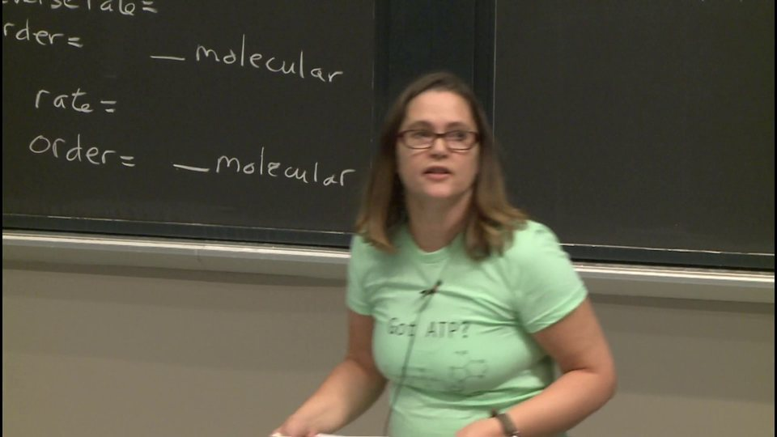
Fizik kimyoKinetika: reaksiya mexanizmlari
MIT 5.111 kursining 32-ma’ruzasi: kinetika va reaksiya mexanizmlari.
MIT OpenCourseWare · ingliz tilida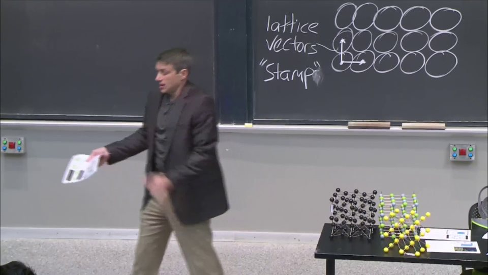
Qattiq jism kimyosiKristallografiyaga kirish
MIT 3.091 (qattiq jism kimyosiga kirish) kursining 18-ma’ruzasi: kristallografiyaga kirish.
MIT OpenCourseWare · ingliz tilidaUAC darslari YouTube’da
O‘zbek tilidagi video darslarimizni @chemistryuac kanaliga yuklashni boshlayapmiz. Obuna bo‘lsangiz, birinchi darsdan xabar topasiz.